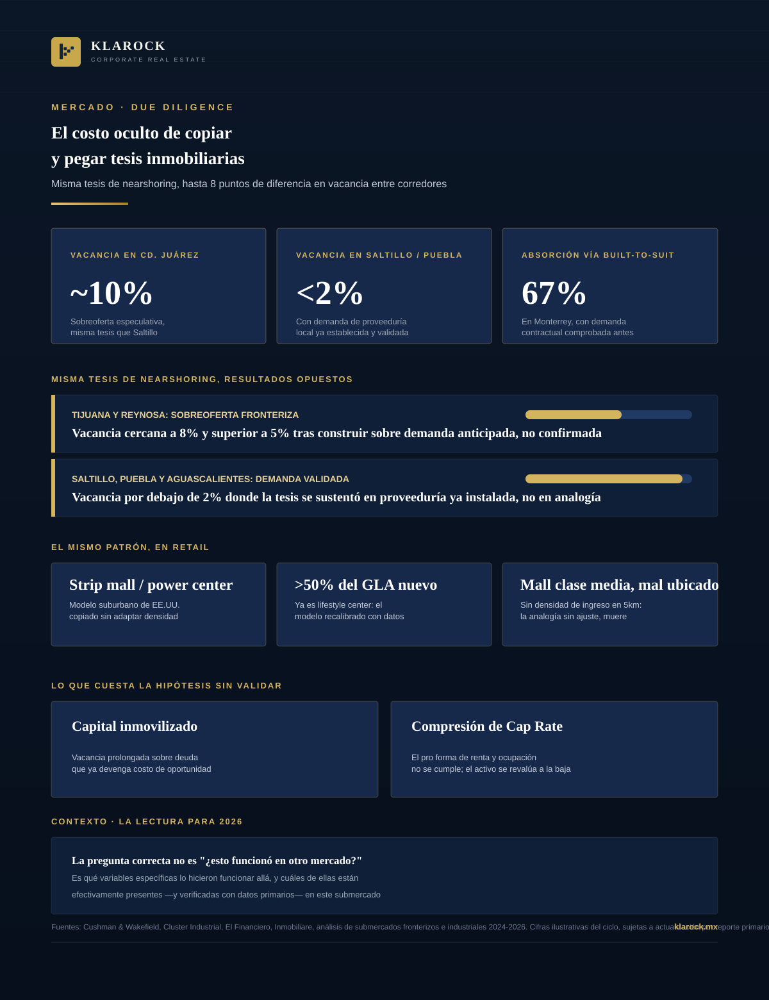

Mercado · 2026-09-08
La tesis "esto ya funcionó allá" se aplicó por igual en Saltillo, Puebla, Aguascalientes, Ciudad Juárez, Reynosa y Tijuana. Dos años después la vacancia difiere hasta 8 puntos porcentuales entre esos corredores. La variable que explica la diferencia no fue el nearshoring como fenómeno: fue si el desarrollador validó demanda local antes de construir, o si construyó sobre la analogía.

Cada ciclo inmobiliario mexicano arrastra la misma frase, repetida en comités de inversión, pitch decks de desarrolladores y mesas de FIBRAs: "esto ya funcionó en [inserte mercado maduro]". Texas, Miami, el Bajío exitoso replicado en el Sureste, el modelo de power center suburbano de Estados Unidos, el mismo LOI de nave clase A+ firmado en Monterrey y calcado en Reynosa. El problema no es la inspiración —es que la analogía se presenta como diligencia. Y entre una hipótesis razonable y una tesis de inversión validada hay un abismo que, en bienes raíces, se mide en millones de dólares de capital inmovilizado.
El desarrollo inmobiliario no es un producto que se exporta; es la intersección de demanda local, marco regulatorio local, infraestructura local y comportamiento del capital local. Un modelo que funcionó "allá" funcionó por una combinación específica de variables —densidad poblacional, ingreso disponible, costo de energía, tenencia de la tierra, apetito crediticio, cultura de consumo— que rara vez se replica completa en un nuevo mercado.
La pregunta correcta no es "¿esto funcionó en otro mercado?". Es qué variables específicas hicieron que funcionara allá, y cuáles de esas variables están efectivamente presentes —y verificadas con datos primarios— en este submercado: demanda contractual o pipeline de absorción verificable antes de construir especulativamente, infraestructura crítica confirmada antes de comprometer capital, y comparables del submercado exacto, no del país o "la región", antes de fijar el pro forma de renta.
En Klarock no evaluamos tesis por analogía. Evaluamos cada submercado por sus propios fundamentos —demanda comprobada, infraestructura verificada, comparables locales— antes de que el capital se comprometa.
Escríbanos por DM: tenemos la metodología de validación de demanda local para contrastarla antes de construir.
Contactar a un Socio Director